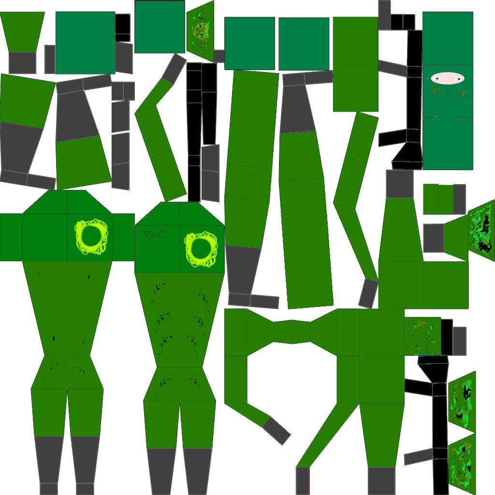
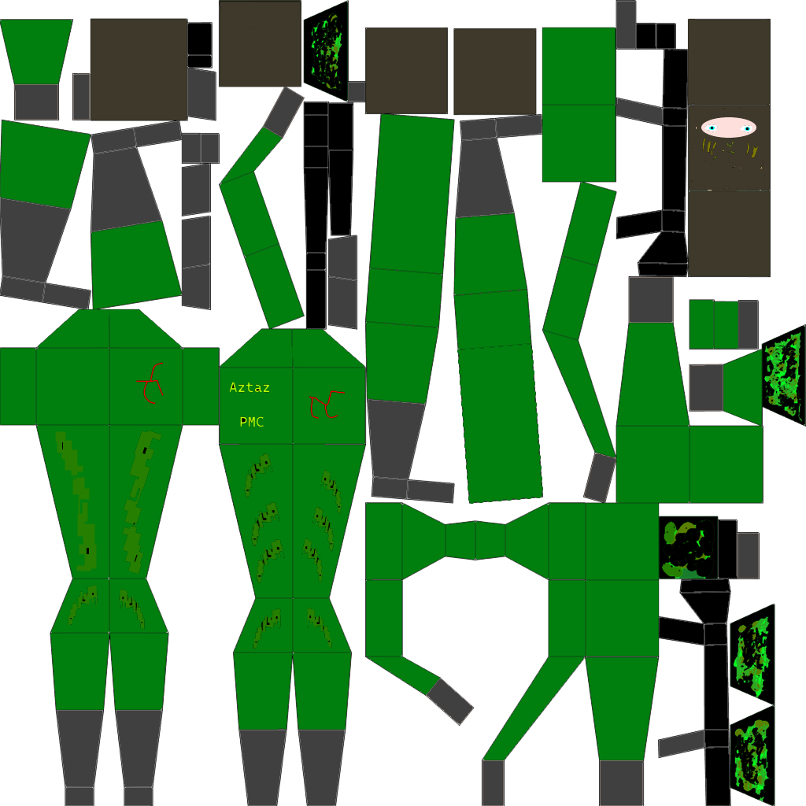
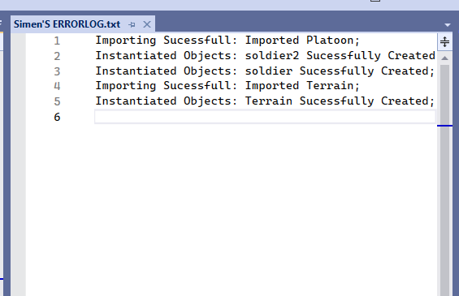

The rendering pipeline uses uv coordinates to map textures to 3d models.
Here are the texturemaps for the two soldier types and the terrain.


This is my debugging tool, it allows me to add a comment during the runtime of my code.
Currently it imforms me if the .obj models i import get imported correctly and instantiated.
the syntax is very simple:
HRESULT hr;
hr = m.Import("platoon.obj");
if (FAILED(hr))
{
deb.InfoLogg("Importing Platoon Failed", "Failed Importing");
}
else
{
deb.InfoLogg("Imported Platoon", "Importing Sucessfull");
}

Return